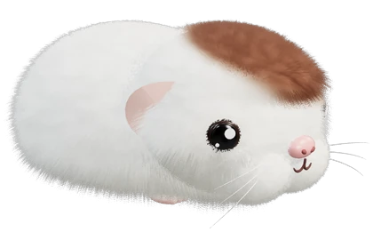
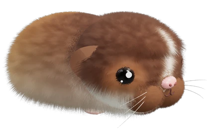

Hier entsteht etwas NeuesSomething new is coming
Wheek & Seek bekommt ein neues Spiel: Du und ein anderes Meerschweinchen brecht gleichzeitig aus dem Gehege aus und sucht um die Wette Futter. Bis die neue Seite fertig ist, kannst du das Spiel kostenlos bei CrazyGames spielen.
Wheek & Seek is getting a new game: you and another guinea pig break out of the pen at the same time and race to find food. Until the new site is ready, you can play for free on CrazyGames.
Auf CrazyGames spielenPlay on CrazyGames